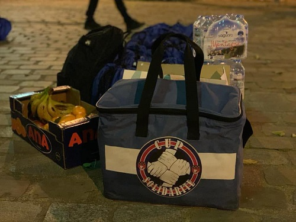

L'équipe 1 Repas 1 Sourire a participé ce Jeudi 28 Janvier à une maraude organisée par le Collectif Ultras Paris Solidarité. Pendant cette maraude, nous avons pris conscience des réalités du terrain et de l'organisation qu'il nous faudra pour mener a bien notre projet.
Au cours de cette maraude, 250 repas chauds ont été distribués, comprenant des pâtes aux olives accompagnées d'agneau, d'une compote, d'une madeleine et ceci avec une bouteille d'eau. Afin que les bénéficiaire puissent manger un repas chaud, les repas étaient dans des barquettes isothermes, elles-mêmes dans des sacs isothermes. Des vêtements et des produits hygiéniques ont également étaient distribués au cours de cette soirée.
Pour distribuer ces 250 repas, 28 bénévoles étaient présent, dont l'équipe 1 Repas 1 Sourire. Nous étions divisés en 6 équipes, pour pouvoir toucher différents secteurs : Montparnasse, St Lazare, Bastille, Bercy, Gare de Lyon et Austerlitz.
L'équipe 1 Repas 1 Sourire a également participé ce Jeudi 4 février à une deuxième maraude organisée par le Collectif Ultras Paris Solidarité. Lors cette maraude, nous avons distribués des repas aux sans-abris parisiens.
Au cours de cette maraude, 250 repas chauds ont été distribués, comprenant des pâtes accompagnées de boulettes de viande, de fruits (Bananes, mandarines), d'une madeleine et ceci avec une bouteille d'eau. En cette période de Chandeleur, des crêpes et des chocolats ont également été donnés aux sans-abris. Des vêtements et des produits hygiéniques ont également étaient distribués au cours de cette soirée tel que des brosses à dents et du dentifrice. Les bénéficiaire ont pu manger un repas chaud et équilibrés leurs permettant de reprendre des forces. Nous avons aussi pu discuter avec eux de différent sujet afin de leur apporter un côté social.
Pour distribuer ces 250 repas, 30 bénévoles étaient présents, dont l'équipe 1 Repas 1 Sourire. Nous étions divisés en 6 équipes. L'équipe de Jessy et Killian sont intervenus dans le secteur d'Austerlitz et celle de Timothée et Pierre se sont dirigés vers Bastille. Concernant les 4 autres groupes, ils sont allés à Montparnasse, St Lazare, , Bercy et Gare de Lyon.
Au cours de cette maraude avec le CUP Solidarité, nous avons été
particulièrement marqués par les conditions dans lesquelles vivent
les SDF. En effet, ils vivent dans la peur de se faire agresser,
ils dorment peu la nuit.Pendant les maraudes, distribuer des
repas, des vêtements ou des produits hygiéniques n’est pas le
seul moyen de leur apporter de l’espoir et de les faire sourire.
Il faut prendre le temps avec chacun d’entre eux. On a par exemple
parlé de foot. De plus, en parlant avec eux, et même en rigolant
avec eux, on se rend compte que finalement, la société dans laquelle
nous vivons crée des stéréotypes sur les sans-abris. On a découvert
une tout autre réalité à laquelle on s’attendait. Ce sont des
personnes qui vivent comme nous, ils font des footings,
ils vont dans des cafés.Ce qui nous a également marqué c’est
leur grande générosité, certains refusaient de prendre
les repas chauds s’ils n’avaient pas faim, d’autres faisaient
cadeau du peu qu’ils avaient à d’autres personnes se trouvant dans
la même situation qu’eux. Même en ayant peu de moyen à leur
disposition, ils donnent, sans rien attendre en retour.
Finalement, ce sont des personnes comme vous, comme nous,
ils ne demandent qu’une chose, du soutien !
ENSEMBLE UNISSONS-NOUS !